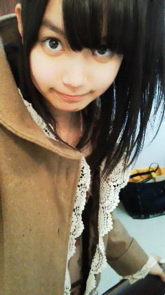
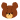

2011年3月11日に起きた
東日本大震災で被災されたすべての方へ、
ご冥福をお祈りします。
おととい
今年になって初めて家族５人が揃いました。
改めて思ったのは、
やっぱり、
家族っていいですよね。
冬休みからずっと東京にいたのですが、
卒業式を前に久々に広島に帰ってきました。
もちろん、東京でメンバーと一緒にお仕事してるのも幸せです(ω)
だけどやっぱりどこか、癒してくれる場所に帰りたくなるんですよね。
そんなとき広島に帰れば、ひめたんには、
一緒に３年間過ごしてきた仲間たちがいる。
宝物がいーっぱい詰まったおうちがある。
そして、帰りを待ってくれている家族がいる。
みんながいるから、ひめたんは毎日頑張れるんじゃないかなって思います。
2011年3月11日午後2時46分。
ひめたんは中学2年生で、先輩の卒業式前日でした。
体育館をきれいに飾って、さああとは明日を待つだけだー!って帰宅...
したら、起きてしまったんです。
東日本大震災。
岩手、宮城に住む卒業生は、どんな気持ちだったのだろう。
卒業式。学校生活の中で1番と言っても過言ではないくらいのビッグイベント。
一緒に頑張った仲間たちと別れて新たなスタートを切るための卒業式。
そんな大切な行事を心待ちにしていたたくさんの学生さんのことを思うと
胸が痛いです。
1年後の今日。
ひめたんも卒業式を明日に控えた中学生。
寂しくもあり楽しみでもあり、
今は何とも言えないふわふわした気持ちです。
この3年間を振り返って
いろんな出会いがあったよなーとか思いながら
お世話になった後輩のみんなにお手紙書いたり...
仲間がいて、家族がいて、校舎があって、
先生や後輩が学校中をきれいにしてくれて
初めて成り立つ。
それだけたくさんの方に支えてもらって、私たちは学校生活が送れてたんだって
改めて感謝する日でもあるんですよね。
そんな晴れやかな気持ちといっしょに
東北には、卒業式を楽しみにしたまま家族と離ればなれになってしまった
学生さんがたくさんいるのかな、とふと考えました。
寂しくて、悲しくて、でも自分は祈ることしかできなくて。
私がもし1年前のあの震災の日に東北にいたらどうだっただろう。
いま私たちは何ができるんだろう。
今も大変な環境の中で精一杯毎日を生きている人がたくさんいるのに
私は後輩たちに見送られて、笑顔で巣立ってゆく。
ささいなことしか力になれないのが情けないです。
今の私にできることは
東北のみなさんまでぱわーを届けること。
大好きな歌とダンス、それからブログ。
少しの力だけど、幸せを届けることができるかもしれない。
東京に帰ったらチャリティーイベントが待ってるので、たくさんの人が元気になるような
パフォーマンスができるように頑張ります。
それから、日々感謝すること。
出会えた人ひとりひとり、意味があるんですよねきっと。
明日私はたくさんの旧友たちとさよならしてします。
もう会えなくなるわけじゃないけど、
頑張ってきますってのと一緒に
今までの感謝の気持ちも精一杯伝えてきます。
そしてこの春出会うであろう東京の仲間たち。
そしてこれからもお世話になるメンバーのみんな。
乃木坂ふぁみりーのみなさん。
いつもありがとう。私を支えてくれてありがとう。
これからもよろしくお願いします!
いつお別れしても
後悔しないような付き合いをしなさい。
一期一会。
いつもひめたんが大切にしてる言葉です(*^^*)
日本中、世界中のみなさんが一期一会を大切にすることが
復興への第一歩なのではないでしょうか。
最近ぶろぐ更新できてなくてごめんなさい。
おうちの中がダンボールで埋まってて優越感っ∪・ω・∪
それでは、
中学校生活
最後のビッグイベント
卒業式に参加してきます。
ひめか
いつもコメントありがとうございます(^^)
支えてくださるみなさまのおかげで、
ひめたん(*ゝω・*)ノその97、
初☆コメ数100越え!
＼(o>ω<o)／
...とはいえ、
かなりんふぁんのみなさんが握手会の感想を書いてくださったのが
大きな力ではありますが。
普段は数にこだわる人じゃないけど、1っの目標としてきたので、
とっても嬉しかったです!
ありがとうございました(ω)
11月から今まで嬉しい時も疲れた時も、何かと日記書いては
みなさんに元気を分けてもらうのが日課になってるようなもので(^^)
イベントで会いにいくことが中々できないから、
ブログでひめきゅんのみなさんと繋がってるんだってのが嬉しいですね〜♪♪
これからもみなさんに会いに行きたいけど、
毎日毎週顔を見るのはとても難しそうなので
それまでブログでお話しましょうね(ω)◎
ひめたんらしく更新頑張ろうと思います!
最近日記ってゆ日記じゃなくてごめんね('・ω・`)←
その100!ですぺしゃるさんくすしたいので、コメ返に徹してみたりしてるの。
...て、えええ!
明日は更新100回目やあ!
ほんとせいたん(畠中清羅chan)は尊敬するね。
あんなハイスピードで更新しとるのに毎回ブログ面白いし、写め可愛いしっ(*/ω＼*)
 そば派、うどん派どっちカナ?
そば派、うどん派どっちカナ?んんん悩むねえ('・ω・`)
どっちも好きだけど、どちらかと聞かれたらうどん派かなあ。
きつねうどん!ネギいっぱい入ってるとなお高山!
私立高校受かりました応援しててくれましたか?? おめでとうございますー!!!
もちろん応援してましたよ♪
私学志望ならお疲れ様でした、
公立志望ならこれからが本番だね(^ω^)!
乃木坂の人たちは、メンバーとの時間って学校の放課的な感じなのかな? そうですねー。
学校って例えも素敵だけど、最近はそれも通り越して家族みたい!
お話するのも楽しいし、何も言わなくても一緒にいるだけで落ち着くの。
 ひめたんは雪好き?おいしいよ(￣∀￣)
ひめたんは雪好き?おいしいよ(￣∀￣) ひめたんって雪見るの初めてですか??
ひめたんって雪見るの初めてですか??この前の雪ってどうだった? たたた食べちゃうの!?
雪を手に取って、ぱくってのはやったことないー(>_<)
広島じゃそんな贅沢できないだろうなーあ。
雪みるのは初めてじゃないけど、今まで見た中で1番積もってたのは確か!
いやあ感動しましたよ(*^^*)目の前に雪しかないとか初めてよおおっ
ひめたん推しメンになりそうなんですけど、ひめたんはOKですか? 握手会とか全然参加出来てないのにひめたん推しになっても良いですか?(/_;) 滋賀のミニ握手会でひめたん推しになりました(^-^)まだ遅くないよね?? ひめたんのこと一生推してもいいですか? 元気いっぱい、一生懸命にトークしてたひめたんを好きになってもいいですか? 俺もひめたん推しになってもええかなぁ......仲間に入れて下さい(;_;)ε=ε=┏( ひめたんのパパ世代だけど、ひめたんを応援しても、問題ないかな? 最近よくこんな質問をいただきます。
ほんまにほんまにありがとう(//ω//)!
ひめきゅんさんになるのに遅いとかないですよー♪
条件とかないないっ!
これからもひめたん頑張るね!
 ひめたんの好きな言葉とか座右の銘とか大事にしてることばがあったら教えてー(^-^)v!
ひめたんの好きな言葉とか座右の銘とか大事にしてることばがあったら教えてー(^-^)v!「一期一会」。
ひとつひとつの出会いには意味があって、
大切にしなきゃなっていつも思っとるよー(^^)
素敵でしょー??
 ほんま今ひめたんのことで頭いっぱいやわどうしたらいいん?
ほんま今ひめたんのことで頭いっぱいやわどうしたらいいん?とりあえず今までの日記とか読み返して、もっとひめたんのこと詳しくなるしか!
...と言いつつ。
結構時間かかるだろうなあ('・ω・`)
時間があるときにぜひ!
最近花粉やばない?ひめたんは花粉大丈夫なん?笑っ ひめたんは花粉症じゃないのカナ? かずみさん(高山一実chan)が花粉症大変らしいです(';ω;)←
それがひめたんはまったく大丈夫なんよねえ
ある日突然やばあってことになるんかな...
ひめたん(*´・ω・*)

ひめたんいぇい(^ω^)!
この前みゅみゅ(若月佑美chan)とショッピング言ったのよー♪
で春ブーツ買ったんですよ!
らす1の商品みたいなんだけど本当可愛くて♪
ただ、
ただあとで気付いたのが
サイズ見ずに買ったねって。
でサイズ見たら
なんとLL!
(・o・ノ)ノ!
なんだけど、いっつも履くのはMなんだけど
そのブーツ足首がきゅってなってるから、歩くのに支障はないんだよ。
だから全然大丈夫♪愛用しますとも。
みゅみゅありがとう!また連れてってねー(//ω//)
今日もコメ返多め。いつもありがとうです♪♪
 3月5日誕生日だからお祝いしてください♪*
3月5日誕生日だからお祝いしてください♪*お誕生日おめでとうございます!
この前は握手会来てくれてありがとうっ(//ω//)
短い時間だったけど話せて楽しかったよ☆
今日は1日楽しい日になりますように...(^^)
 寒ブリ美味しかった??
寒ブリ美味しかった??鱒のすしも有名なんだけど食べてった＼(^o^)／?
白えびは食べれましたか?
 ひめたんって魚介類が苦手って言ってたけどお寿司の中で何が好きなの!?
ひめたんって魚介類が苦手って言ってたけどお寿司の中で何が好きなの!?寒ブリ美味しかった(^^)!
鱒と白えびは食べてないです(>_<)
じゃ富山のお寿司屋さんエピソード書こうかな。
移動のロケバスの中で、「何のお寿司が好きー?」って話になったんよー
ひめたんちっちゃい頃は極度のお魚さん嫌いで、お刺身も食べなかったからね
「ちっちゃい頃はたまごばっかり食べてたよ←」って。
あ今は結構食べれるようになりました♪
まいやん(白石麻衣chan)は「サーモンが好き!」って。
質問てコメントに書けばいいの?
そうですよ!
ぴんぽーんです(ω)◎
 甘えん坊のひめたんはメンバーの中で1番誰に甘えてるカナ?
甘えん坊のひめたんはメンバーの中で1番誰に甘えてるカナ?1番なんて決められないけれどもー、
みさみさ(衛藤美彩chan)、みゅみゅ(若月佑美chan)とかのしっかりしたお姉さんかな(∀)
ひめたんは、心理テスト好きかな?真相心理って興味ある?
いい結果だけ信じる人です(*^^*)
ざ☆ぷらす思考!
早口言葉言えるようになった?ww
炙りカルビ炙りカルビ炙りカルビ!
(`・ω・')どやあ
...はい言えません。練習しておくね?
日芽香のこれからの目標やしたい事を教えてほしい!
個人的な目標としては、やっぱり歌やダンスもビジュアルも
もっともっと磨いていかなきゃ!
したい事はーなんだろう。もっとイベントで地方をまわりたい(ω)!
何かオススメのマンガとかありますか?
ひめたんあんまりマンガ読まないんよね('・ω・`)
少女マンガにはまりたい時期もあったりしたけれども☆
何かオススメのマンガあれば教えてください!
ひめたんは、自分がやるとしたらどんな髪型が好きですか?
ハーフアップ好きかなっ(*/ω＼*)
 ひめたんは雪合戦とかするのは好き?
ひめたんは雪合戦とかするのは好き?雪合戦は見てるだけで満足∩^ω^∩★
寒いから雪に触ろうとは思わないの。当てられるのも当たるのも冷たいじゃん...
でも「きゃー!」って言いながらはしゃいでるみんなの幸せそうな顔をみるのは好き!
 日芽香ちゃんの嫌いな物ってなに?
日芽香ちゃんの嫌いな物ってなに?苦手なものありますか。
また苦手だけど克服したいもの、たぶん無理そうなものなどありましたら教えてください。
苦手はものは
焼いたお魚、煮たお魚、
走ること投げること
飛ぶこと泳ぐこと、
数学、理科、あと寒さ!
でもお魚さんは克服しなきゃだよねー。
頑張る。お魚さんのこと好きになるから(∀)!
 何の季節がすきですか?
何の季節がすきですか?春(`・ω・')!
ぽかぽかしてるし、いろんなイベントがあるしお誕生日もあるし。
今年は春から高校生だからいろんな出会いもあって楽しみなの!
 声らぶたんににてるよね分かる?
声らぶたんににてるよね分かる?らぶたんさんもちろんわかりますよ(ω)♪可愛らしいですよね!
ほんとですかー?嬉しいっ☆☆
ひめたんの好きなお菓子は何カナ?
甘ーいお菓子は大概好き(*^^*)
やっぱ明治のミルチ好きですよお♪♪
ひめたん(*´・ω・*)
全国握手会inよみうりランド
無事終わりました(^ω^)
行けないよーて応援してくださっていた方、ありがとうございました。
来て下さった方、ライブ・握手会それぞれ感想聞かせてください♪
朝は野外ライブ。ひめたんなりの振り返り。
-ぐるぐるカーテン-
れなりん(市来玲奈chan)のアンダーとして出演させていただきました。
れなりんの分まで楽しんで踊ったつもりです(*^^*)
自分たちの表題曲をうたうのがこんなにも誇らしいことかと思うと
もっと自分も頑張んなきゃなって!
-左胸の勇気-
ということで左胸初披露。
アンダーメンバーのぱわふるな感じが、歌やダンスで表現できたかしらー?
みんな早く左胸を見てほしくて、うずうずしてたの(>_<)
あんなに広いステージでパフォーマンスできて感動しましたー!!!
ユニフォームもいいしょー。早替えだったから写真撮れなかったの←
いつか写メ撮るね!
-会いたかったかもしれない-
こちらもれなりんのアンダーとして。
ひめたん激しいダンスが好きだから、会いかも大好きなのほんとに♪♪
ひめたん的に会いかももお客さんの前で踊ったのは初めてかもしれない。
ローファーでつるってなったのはここだけの話(ω)←
-乃木坂の詩-
会場中が一体化!
おんなじ動きしてくださってるの、ステージからみててきれいでしたよ＼(^^)／★
玲香せんせい(桜井玲香chan)のレクチャーのおかげと、優秀なみなさんのちからですね♪
乃木詩は私たちのテーマソングと言える曲。みなさんと一緒に作っていけて嬉しい!
この4曲に出させていただきました。
-握手会-
かなりん(中田花奈chan)ふぁんのみなさん温かく迎えてくださって
ありがとうございました!
かなりんの次で全然いいから、いや3番目でも4番目でも
ひめたんのこと好きになってくれたら嬉しいな(*/ω＼*)
そしてひめきゅんのみなさん!
初めましての方も
お久しぶりの方も
一週間ぶりの方も、
会いに来てくださってありがとう!!!
コメ返で会話してて実際に会ってみると「ああこんな声してるんだ(^^)」とか
いろいろ発見できて楽しいっ♪
ピンクの服、めっちゃきゅんきゅんしたっ(o>ω<o)!
今日は寒かったからね。風邪ひかないよう暖まって寝ましょうね(。・x・。)ノ
そしてかなりんありがとう!
ひめたんだって中田ふぁんの方に負けないくらいかなりん好きだもんっ。
かなりんふぁんの方は幸せですね。
ふぁんの方の気持ちもわかってるかなりんだからこそ
どんな話をしても楽しいしまた握手したくなるし!
今日もたくさんのこと吸収して、ちょっと反省もして、
でも会いに来てくださった方と仲良くなれて嬉しいし
いつか会う時のために一歩ステップアップできたかなと思ってます。
聞き飽きたフレーズかもだけど
ひめたんは歌うこと踊ることが大好きだから
これからも、自分磨きはもちろんだけど
パフォーマンスにも磨きをかけていこうって改めて思いました!
らいぶ最高ーっ(^O^)
 3月3日、僕誕生日なんだけど...ひめたんに祝ってほしかった!
3月3日、僕誕生日なんだけど...ひめたんに祝ってほしかった!お誕生日おめでとう!
幸せな1年になりますように...☆
おひな祭りの日なんて素敵ですね(^^)!
どんな誕生日を過ごしましたか??
 最近ハマっている髪型とかありますか(*^ω^*)?
最近ハマっている髪型とかありますか(*^ω^*)?やっぱりハーフアップかな。
今日もハーフアップしたよ!写真のやつ〜♪
どうしてそんなに可愛いの?
ええー可愛くないひめたんに聞いちゃうー('・ω・`)?
ひめたんも可愛くなりたいの!いっしょにおんなのこ極めよー☆
 富山弁は何か覚えましたかー?
富山弁は何か覚えましたかー?富山弁!
この前富山県民からあんまり富山弁聞けなかった...。
富山弁教えて下さいっ!
ひめたんって何人兄弟?
姉さん1人に妹1人の3姉妹(ω)♪
3姉妹の真ん中っ子は大変ですよ??伝わらないかなあ。
 ひめたんの好きな色とかキャラクター教えてほしいな(*^_^*)
ひめたんの好きな色とかキャラクター教えてほしいな(*^_^*)好きな色はぴんく!
パステルカラー系は何でも可愛いと思うけど、一色選ぶならぴんくかな。
好きなキャラクターはジャッキー!
広島のいいところは?
ひめたんが広島でオススメするものはなに?
広島県民はみんなあったかい!
メンバーからはひめたんもまあや(和田まあやchan)も歩くの遅いて言われるけど
やっぱりのんびりしとるんかな(ω)
オススメは揚げもみじ。ほんま美味しいけ、ぜひ食べて帰ってください!!
(*´・ω・*)ひめたん